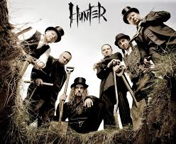

Hunter
Hunter – polski zespół wykonujący muzykę z pogranicza thrash i heavy metalu. Powstał w 1985 roku w Szczytnie z inicjatywy wokalisty i gitarzysty Pawła „Draka” Grzegorczyka oraz perkusisty Grzegorza „Brooza” Sławińskiego. Przez znaczny okres działalność zespołu była skupiona w artystycznym podziemiu. Szerszy rozgłos grupa zyskała już za sprawą wydanego w 1995 roku debiutanckiego albumu Requiem, który był promowany m.in. w programach Telewizji Polskiej „Luz” i „Clipol”.
Obecny skład zespołu
Paweł „Drak” Grzegorczyk – wokal prowadzący, gitara (od 1985)Piotr „Pit” Kędzierzawski – gitara, wokal wspierający (od 1999)
Michał „Jelonek” Jelonek – skrzypce, wokal wspierający (od 2002)
Konrad „Saimon” Karchut – gitara basowa (od 1999)
Dariusz „Daray” Brzozowski – perkusja (od 2009)
Arkadiusz „Letki” Letkiewicz – instrumenty perkusyjne (od 2010)